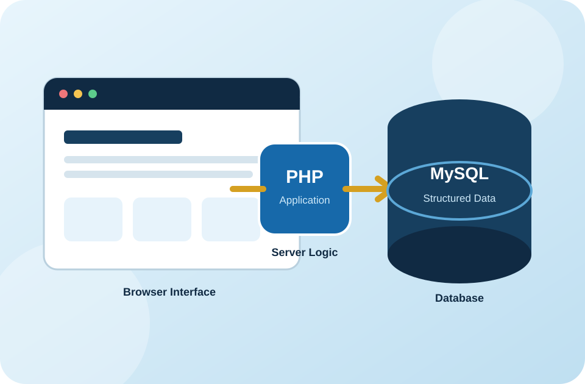
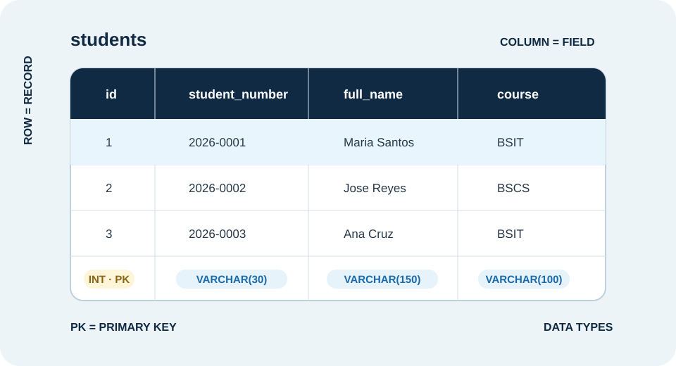
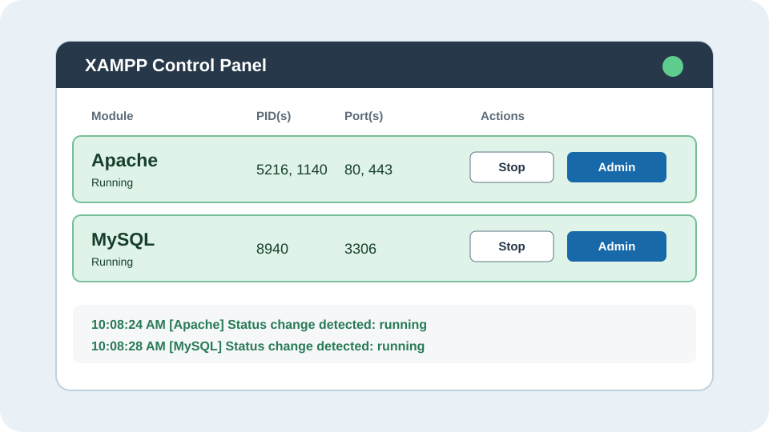
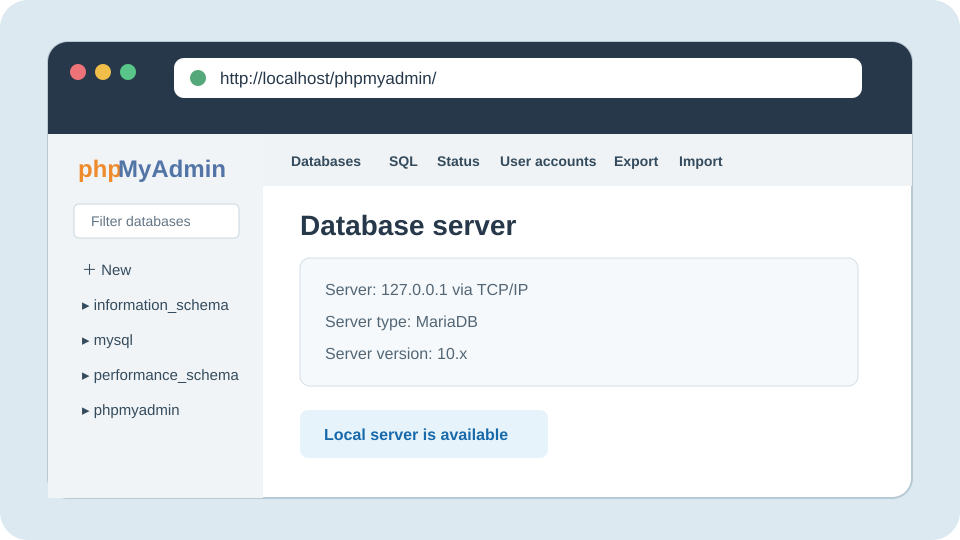
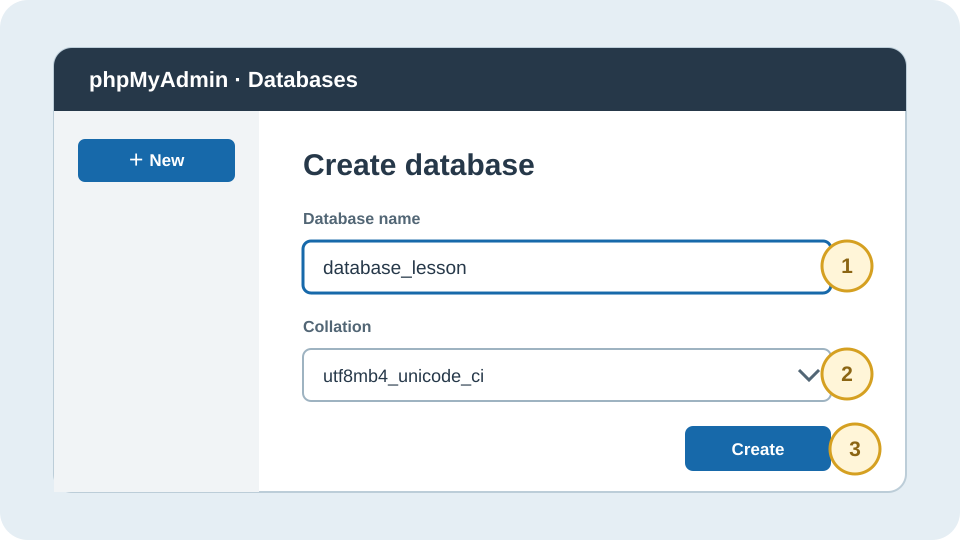
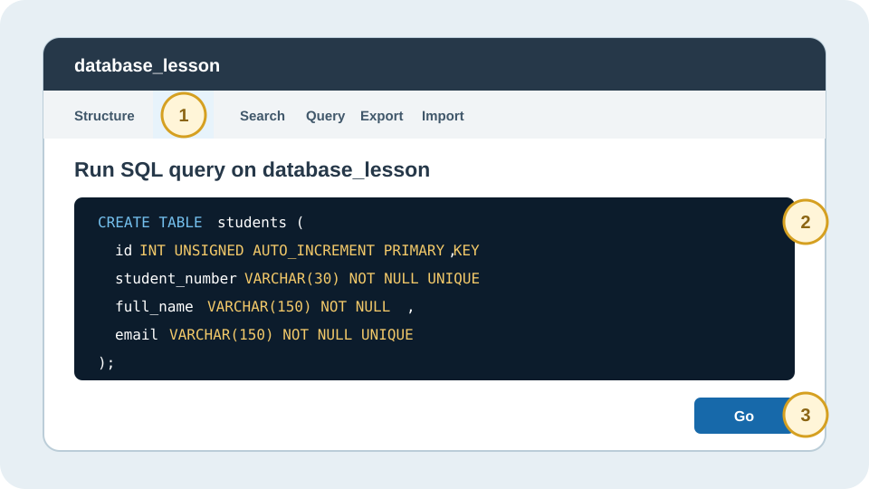
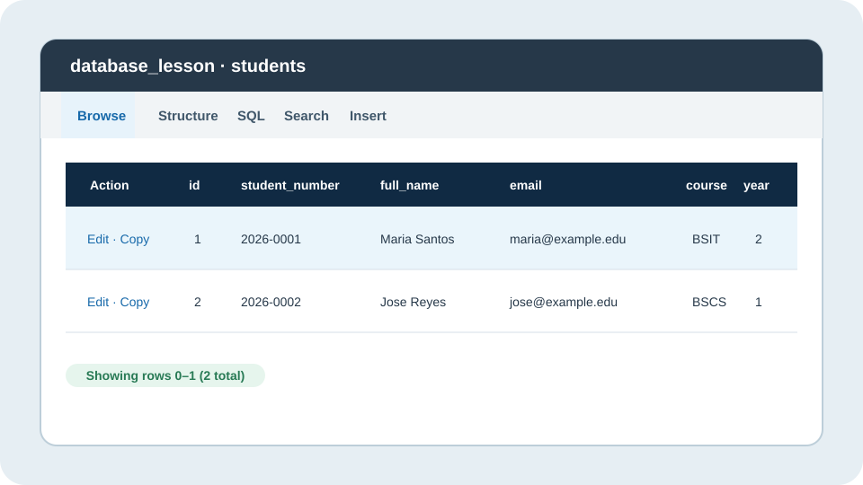
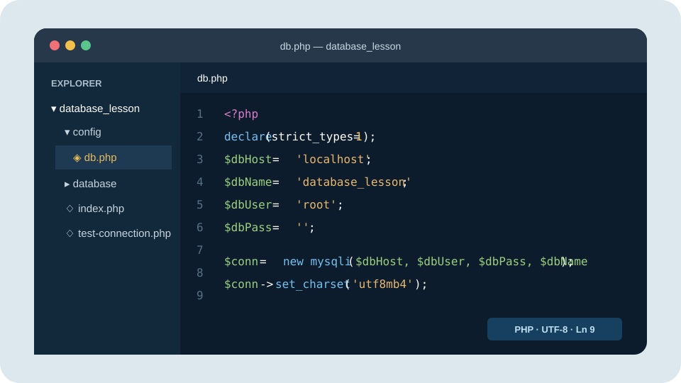
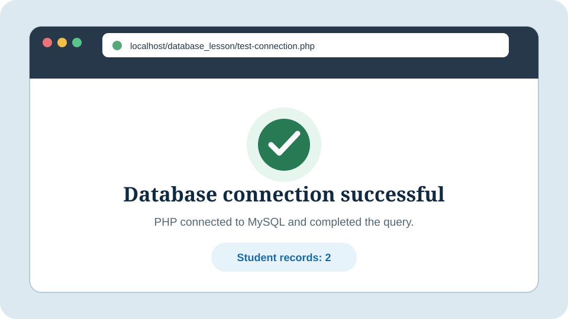
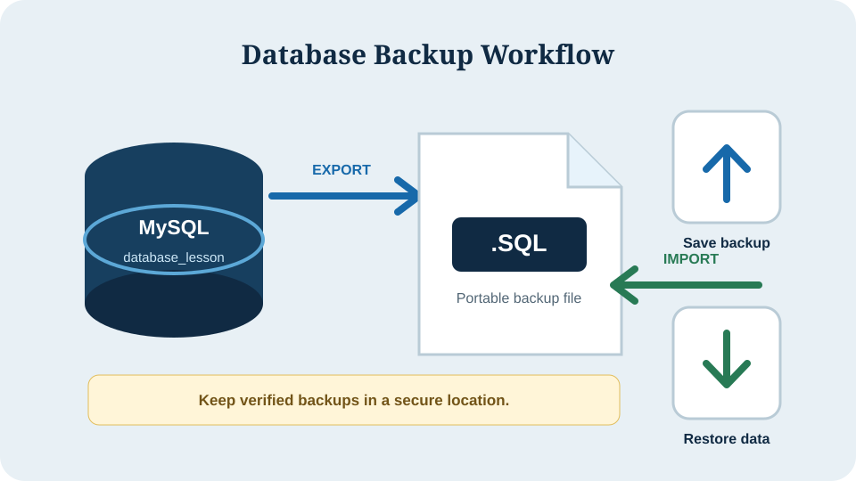

Database
A named container that groups related tables for one system or project.
Information and Communications Technology
Learning Module Series
Lesson 01 · Database Fundamentals
A guided laboratory lesson on creating, organizing, connecting, testing, and securing a database using XAMPP, phpMyAdmin, SQL, and PHP.

Introduction
A database is an organized collection of information that an application can store, search, update, and protect. In a PHP website, the database commonly stores user accounts, appointments, records, messages, and other structured information.
This module demonstrates a local development setup using XAMPP as the server package, MySQL or MariaDB as the database management system, phpMyAdmin as the browser-based management interface, and PHP as the application language.
XAMPP is the local server package. MySQL/MariaDB manages the data. phpMyAdmin is only a visual administration tool. PHP is the application that communicates with the database.
Expected Outcomes
At the end of this lesson, the learner should be able to:
Foundation
A named container that groups related tables for one system or project.
A structured collection of related information arranged in rows and columns.
A record is one row. A field is one property or column within that row.
A unique value, commonly an auto-incrementing ID, that identifies each record.
A field that connects a record to the primary key of another table.
Structured Query Language is used to create, read, update, and delete data.

Preparation
htdocs folderhtdocs/
└── database_lesson/
├── config/
│ └── db.php
├── database/
│ └── database_lesson.sql
├── index.php
└── test-connection.phpSave important work and confirm that ports 80 and 3306 are not being used by another program. Port conflicts may prevent Apache or MySQL from starting.
Guided Demonstration
Complete the following steps in order. After each major step, verify the expected result before moving forward.
Select Run Example beside a code sample to display its expected result in a GUI-style preview. These previews run entirely in the browser for teaching purposes; they do not execute PHP, MySQL, or modify a real database.
Server Preparation

http://localhost/. The XAMPP dashboard should appear without an error.Database Administration
http://localhost/phpmyadmin/ in the address bar.
Schema Creation
database_lesson as the database name.utf8mb4_unicode_ci as the collation.
utf8mb4 character set supports a broad range of international characters.Use descriptive lowercase names with underscores, such as student_portal or parish_records. Avoid spaces, punctuation, and vague names such as db1.
Table Design
database_lesson database.CREATE TABLE students (
id INT UNSIGNED AUTO_INCREMENT PRIMARY KEY,
student_number VARCHAR(30) NOT NULL UNIQUE,
full_name VARCHAR(150) NOT NULL,
email VARCHAR(150) NOT NULL UNIQUE,
course VARCHAR(100) NOT NULL,
year_level TINYINT UNSIGNED NOT NULL,
created_at TIMESTAMP DEFAULT CURRENT_TIMESTAMP
) ENGINE=InnoDB DEFAULT CHARSET=utf8mb4
COLLATE=utf8mb4_unicode_ci;
| Field | Data type | Reason |
|---|---|---|
id | INT UNSIGNED | Stores a positive numeric identifier. |
student_number | VARCHAR(30) | May contain letters, numbers, or hyphens. |
full_name | VARCHAR(150) | Stores variable-length text efficiently. |
year_level | TINYINT UNSIGNED | Uses a small positive whole number. |
created_at | TIMESTAMP | Records when the row was created. |
Data Operations
Add two sample records so the table can be tested.
INSERT INTO students
(student_number, full_name, email, course, year_level)
VALUES
('2026-0001', 'Maria Santos', 'maria@example.edu', 'BSIT', 2),
('2026-0002', 'Jose Reyes', 'jose@example.edu', 'BSCS', 1);
SELECT * FROM students;
SELECT statement to confirm that records were saved correctly.Application Connection
Create config/db.php inside the project folder. Keeping the connection in one file prevents repeated configuration and simplifies maintenance.
<?php
declare(strict_types=1);
$dbHost = 'localhost';
$dbName = 'database_lesson';
$dbUser = 'root';
$dbPass = ''; // Default local XAMPP password is blank.
mysqli_report(MYSQLI_REPORT_ERROR | MYSQLI_REPORT_STRICT);
try {
$conn = new mysqli($dbHost, $dbUser, $dbPass, $dbName);
$conn->set_charset('utf8mb4');
} catch (mysqli_sql_exception $exception) {
error_log('Database connection error: ' . $exception->getMessage());
http_response_code(500);
exit('Unable to connect to the database.');
}
The default local XAMPP account may use root with a blank password. A hosted website must use the exact database host, database name, username, and password supplied by the hosting provider.
Connection Verification
Create test-connection.php in the project root.
<?php
require_once __DIR__ . '/config/db.php';
$result = $conn->query('SELECT COUNT(*) AS total FROM students');
$row = $result->fetch_assoc();
?>
<!DOCTYPE html>
<html lang="en">
<head>
<meta charset="UTF-8">
<title>Database Test</title>
</head>
<body>
<h1>Database connection successful</h1>
<p>Student records: <?= (int) $row['total'] ?></p>
</body>
</html>Open http://localhost/database_lesson/test-connection.php. A success message and a record count of 2 should appear.

Backup and Portability
.sql file.
Professional Practice
Do not publish real database passwords in screenshots, repositories, or public files.
Parameterize user input to reduce SQL injection risk.
Use PHP password_hash() and password_verify(); never save plain-text passwords.
Give a database account only the permissions required by the application.
Check data type, length, format, and allowed values on the server.
Create regular backups and test that important backups can be restored.
$statement = $conn->prepare(
'INSERT INTO students
(student_number, full_name, email, course, year_level)
VALUES (?, ?, ?, ?, ?)'
);
$statement->bind_param(
'ssssi',
$studentNumber,
$fullName,
$email,
$course,
$yearLevel
);
$statement->execute();Problem Solving
| Observed problem | Likely cause | Recommended action |
|---|---|---|
| MySQL stops immediately | Port conflict, improper shutdown, or damaged data files | Review the XAMPP log first. Confirm that another MySQL service is not using port 3306. |
Access denied for user | Incorrect username, password, or account privilege | Verify all credentials and confirm that the account can access the selected database. |
Unknown database | The database name is incorrect or was not created | Compare $dbName with the exact name shown in phpMyAdmin. |
Table doesn't exist | Wrong database selected or SQL import incomplete | Open the database and verify that the expected table appears in the navigation panel. |
| Blank PHP page | A PHP error occurred while error display is disabled | Review the PHP/Apache error log and correct the first reported error. |
| Imported text displays incorrectly | Character-set mismatch | Use utf8mb4 consistently for the database, tables, connection, and source file. |
| Connection works locally but not online | Hosting credentials differ from XAMPP credentials | Use the database details issued by the hosting provider; do not upload local credentials unchanged. |
Performance Task
Individual or Pair Activity
Create a database named course_enrollment. Design at least two related tables named students and enrollments. Insert at least five realistic records, connect the database to PHP, and display a successful record count.
.sql fileconfig/db.php with any real password removed| Criterion | Excellent | Satisfactory | Needs Improvement | Points |
|---|---|---|---|---|
| Database design | Accurate fields, types, keys, and relationship | Minor design issues | Incomplete or unsuitable structure | 10 |
| SQL execution | SQL runs successfully and data is valid | Runs after minor correction | Major errors remain | 10 |
| PHP connection | Reusable, secure, and tested | Works with minor concerns | Connection not working | 10 |
| Evidence and reflection | Complete, clear, and professional | Mostly complete | Missing or unclear evidence | 10 |
Knowledge Check
Answer each question before viewing the suggested answer.
A primary key uniquely identifies each record in a table and prevents duplicate identities.
utf8mb4 recommended?It supports a broad range of Unicode characters and helps preserve multilingual text consistently.
config/db.php?It centralizes configuration, avoids repeated code, and makes maintenance more consistent.
Verify the database username, password, host, and the privileges assigned to that user.
They separate SQL instructions from user-supplied data, reducing the risk of SQL injection.
Reference
127.0.0.1.Lesson Completion
A reliable database setup depends on four connected layers: running server services, a well-designed schema, correct connection settings, and secure application code. Verify each layer separately and record exact errors when troubleshooting.